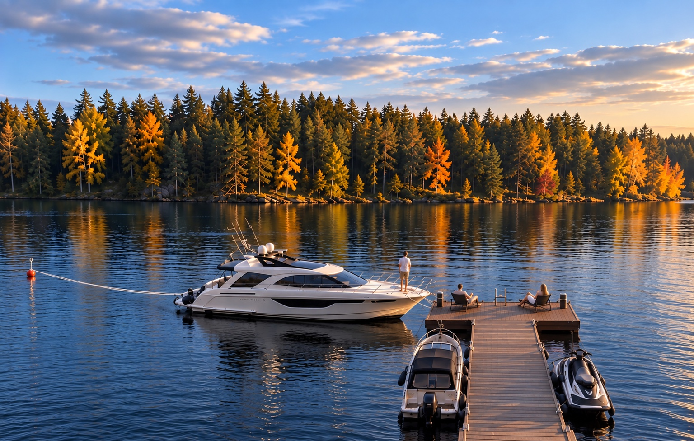

Seriøst bådliv fra egen bred
Villaens private bred er også indrettet til større både. Den private Marinetek-bro giver praktisk langsides fortøjning til to både på omkring 8 meter, suppleret af en separat kraftig bøjemoring til en større båd i klassen cirka 10–12 meter.
Den endelige egnethed afhænger af bådens deplacement, bredde, vindfang og lokale forhold.

Fra din badebro til Tahko
Tahkolahti ligger cirka 10 minutter med båd fra villaen. Læg til ved gæstehavnen for restauranter og tilbuddene i Tahko.


Med båd til Kuopio
Fra Tahko kan du fortsætte med båd til Kuopio ad en cirka 90 km lang indre vandvej. Ruten går gennem tre selvbetjente sluser og regnes for en af Finlands smukkeste indre vandveje.
Fra Kuopio fortsætter vandvejene videre ud i det større Saimaa-søsystem og åbner for flere dage – eller endda uger – på båd gennem det finske søland. Ruter mod Savonlinna går via vandvejene gennem Heinävesi og Varkaus og videre gennem et omfattende netværk af søer, øer, gæstehavne og historiske vandveje i Saimaa-regionen.


Fra badebroen til dybere vand
Syväri er kendt for gedde og sandart. Tag direkte fra badebroen til en rolig fiskeaften eller en længere dag på søen.


En aftendukkert
Brug sommeraftenen på at bade eller køle af mellem turene i saunaen.

Søen efter solnedgang
Når lyset svinder, spejler skoven og villaen sig i vandet.

Fra søen til bordet
Efter en dag med badning eller sejlads kan I samles til middag på terrassen.